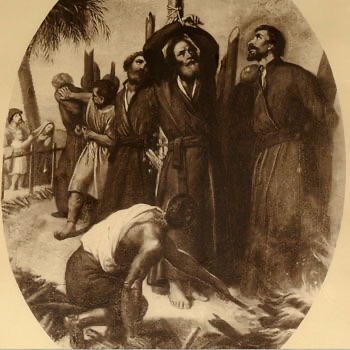

Isusovački blaženici
Svećenik
Bl. Franjo Pacheco
1566. – 1626.
Portugalski misionar i isusovački provincijal potajno se vratio u Japan nakon protjerivanja. U zatočeništvu je s drugovima nastavio živjeti molitvu i redovničko zajedništvo.
Tekst je preveden i prilagođen uz pomoć umjetne inteligencije.

Izvor slike
- Spomendan
- 6. veljače
- Zaštitništvo
- Nije navedeno u izvoru
- Životni vijek
- 1566. – 1626.
- Djelovanje
- Misije i evangelizacija · Obrazovanje i poučavanje vjere · Progoni i progonstvo · Mučeništvo
- Razdoblje
- 16., 17. stoljeće
- Ulazak u Družbu Isusovu
- 1585.
- Rođenje — dostupni podaci
- 1566.; dan i mjesec nisu potvrđeni u provjerenom izvoru.
- Mjesto rođenja
- Portugal
- Datum smrti
- 20.06.1626.
- Mjesto smrti/mučeništva
- Brdo mučenika (Nishizaka), Nagasaki, Japan
- Okolnosti smrti/mučeništva
- Spaljen na lomači zajedno s Franjom Pachecom i drugovima, za progona kršćana.
- Uloga
- Svećenik
- Mučenik
- Da
- Ostale oznake
- Član skupine Franje Pacheca i drugova
- Pripadnost
- Isusovac
- Drugi oblici imena
- Francisco Pacheco · Francisco
Životopis
Franjo Pacheco potjecao je iz Correlhãa kraj Ponte de Lime. Školovanje ga je odvelo u Lisabon, gdje je promatrao brodove koji su misionare nosili prema Aziji. Želja da im se pridruži sazrijevala je prije ulaska u isusovački novicijat 1585. Prema portugalskom isusovačkom prikazu, novicijat je započeo u Coimbri. Godine 1592. krenuo je na Istok, nastavio studije u Goi i Macau te ondje primio svećenički red i predavao teologiju.
U Japan je stigao 1604. Djelovao je u Osaki i Miyaku, zatim od 1608. vodio kolegij u Macau. Po povratku 1612. postao je generalni vikar biskupa Luísa de Cerqueire. Nakon izgona 1614. potajno se vratio, prerušen u trgovca, i služio u Takakuu te na otocima Amakusa i Kani. Preuzeo je apostolsku upravu biskupije, a 1621. vodstvo isusovačke provincije. Preselio se u luku Kuchinotsu radi lakšega obilaska subraće.
U prosincu 1625. izdao ga je nekadašnji domaćin. Vojnici su zatvorili njega, katehiste i obitelji koje su ih skrivale. U Shimabari su molitva i post davali ritam zatočeništvu. Katehisti su primljeni u Družbu, premda nisu imali potrebne predmete za misu. Devetorica isusovaca spaljena su kod Nagasakija 20. lipnja 1626.; njihovi laički pomagači podnijeli su mučeništvo poslije.
Portugalski isusovac Eduardo Amaral, pišući o četiristotoj obljetnici, posebno ističe zajednicu koja je rasla usred iščekivanja smrti. Pachecovo posljednje djelo nije bilo organiziranje bijega, nego prihvaćanje suradnika u istu redovničku obitelj. Tako se njegova provincijalska služba nastavila i u zatvoru: uz svećenike su stajali domaći katehisti, a uz njih ljudi koji su otvorili vlastite domove. Pio IX. uvrstio ga je među blaženike 1867.
Život i nasljeđe
Pachecova služba uključivala je i crkvenu upravu nakon smrti biskupa, uz provincijalsku odgovornost u Družbi. Te dvije uloge nisu istovjetne: jedna se odnosi na mjesnu Crkvu, druga na redovničku zajednicu. Kretanje iz luke Kuchinotsu trebalo je olakšati posjete skrivenim suradnicima. Njegovo uhićenje stoga je imalo posljedice i za povezivanje udaljenih postaja. U zatvoru su mu se pridružili ljudi s kojima nije uvijek ranije radio na istome mjestu, što objašnjava raznolik sastav skupine pogubljene 1626. godine.
Tekst je preveden i prilagođen uz pomoć umjetne inteligencije.
Pročitaj više na izvornoj stranici ↗